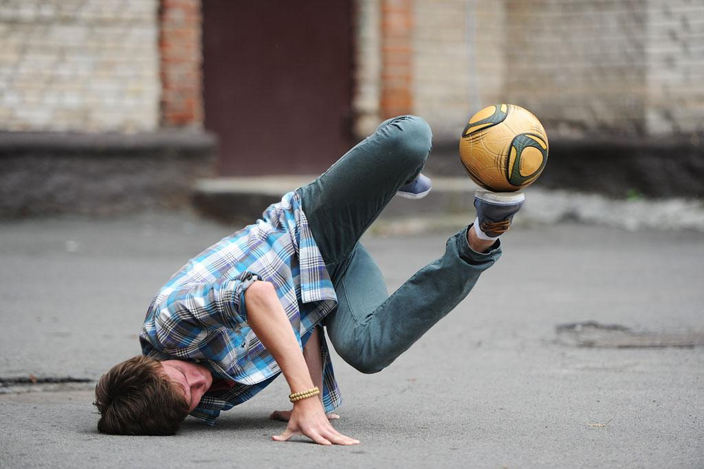

A freestyle football egy sokkal régebbre visszavezethető sportág, mint azt az emberek
általában gondolnák. Már az 1800-as években is voltak olyan cirkuszi labdazsonglőrök (főleg
Dél-Ázsiában) akik mindenféle "lehetetlen" mozdulatot tártak a közönség szeme elé. Ugyan
ekkor még nem nevezték ezt freestyle focinak, de a sport történelmének eredete erre a
korszakra tehető. Chris Christiansen egy még ma is élő cirkuszi labdazsonglőr, aki az 1965
és 2005 között lépett fel francia cirkuszokban mutatványaival és a sportág sokat köszönhet
neki, mivel sok mai mozdulat származtatható tőle. A freestyle közösség szemlélete szerint ő
nevezhető az első freestyle focistának.
Mi is ma a freestyle?

A freetyle football mint sportág a 2000-es évek elején jött igazából létre és azóta
folyamatosan fejlődik, de ekkor kezdtek el sokan világszerte gyakorolni focilabdával
trükköket. A mai sportág öt fő ága ekkor kezdett kialakulni. Ez az öt ág a lower, az
upper, a sitting, a blocking és az akrobatika. De melyik mit is jelent?
Lower
A lower a freestyle foci legnépszerűbb ágazata. Alapja, hogy a freestyler dekázik a
labdával (nagyjából térdmagasságig rúgdossa fel a levegőbe) és két érintés közben
megkerüli a lábával/lábaival a sportszert. Az ilyen kerüléseket nevezzük világkörnek
(around the world). Amikor a sportág kialakult, elkezdték
teszelni a profik, hogy mik a határok, hányszor lehet megkerülni a labdát
maximálisan két érintés között. Az egy és a kettő még egészen reálisnak tűnt és
egyre többen tudtak megcsinálni duplakerüléseket. Azonban ekkor jött az áttörés,
amikor is egy norvég freestyler, Palle Sealander megcsinálta az első hármas kerülős
trükköt, amelyet róla neveztek el, ez lett a Palle világkör, vagy ahogy a freestyle
focis
közösség nevezi Patw (Palle around the world). Ez a trükk abból áll, hogy az érintés
után, azzal a lábbal amelyikkel a felrúgást végeztük, háromszor megkerüljük befelé a
labdát. Ugyan a trükk már a 2000-es évek vége óta terjed és egyre többen csinálják
meg, még mindig a sportág egyik legnehezebb mozdulata. Szintén fontos megemlíteni
Luca Chiarvesio-t aki az első
négyes kerülős trükköt csinálta meg.
Upper
Az upper talán az a része a freestyle footballnak, amely a legkevesebb figyelmet
kapja és amellyel a legkevesebben foglalkoznak akítvan, mivel kényelmetlen és nehéz
úgy csinálni, hogy igazán jól nézzen ki. Itt a felsőtestes trükköket kell érteni
upper alatt, azaz minden olyan mozdulatot amit nem lábbal vágeznek a sportolók.
Ilyenek például a fejen tartás (head stall), a nyakon tartás (neck stall) és az
around the moon (amikor a freestyler a fejével kerüli meg a labdát). Ennek az ágnak
az egyik legkreatívabb és legaktívabb fejlesztője és űzője az ukrán Vladyslav
Tsymbaliuk. Viszont a 9-szeres világbajnok Erlend Fagerli is sokat ad az
upper stílus kreativitásához manapság.
Sitting
A sitting ág érdekes és nagyon sokoldalú. Alapja az, hogy nem állva, hanem ülve
végzik a sportolók, innen is a név. Itt a sportolók kreativitása szárnyalhat, mivel
a gyertsa pózban végzett talpon tartás/dekázástól kezdve az ülve sípcsonton
pattogtatáson át a lótuszülésben fejtetőn egyensúlyozás mind a sitting csládba
tartozik. Tehát a sitting egy nagyon sokoldalú ága a freestylenak. De hogy
mennynire? Az immár világbajnok, holland Jesse Marlet tudna talán erről a legtöbbet
mesélni. Az elmúlt években Jesse megreformálta a sittinget a sok új és rendkívül
kreatív trükkel, amelyeket ő látszólag olyan könnyedén csinál kiélezett
versenyhelyzetekben is, mint ahogy mások levegőt vesznek.
Blocking
Talán az upper mellett ezt űzik a legkevesebben. Ez pedig valószínűleg a freestyle
foci "definíciójából" és a blocking "definíciójából" felírható egyenlőtlenség miatt
van. Ugyanis maga a sportág elvileg abból áll, hogy a labdát nem szabad leejteni a
földre és így kell vele trükköket végezni, a blocking ág pedig arra épül, hogy
különböző testrészeink közé befogjuk a sportszert (például a két bokánk közé).
Felmerülhet a kérdés, hogy ennek mégis mi értelme van. Nos aprofi blocking
freesylerek, általánosan a Távol-Keletiek gyorsan és dinamikusan tudják váltogatni
ezt, egyik blocking helyzetből a másikba vinni a labdát.
Akrobatika
Az akrobatika a manapság leggyorsabban fejlődő ága a freesytle footballnak. Mivel a
lower a legnépszerűbb ága a sportnak, így a profik, akik már rég óta csinálják
kimerítették a lower kombinációk listáját. És mivel a másik három ág nem olyan
látványos így az új generációs sportolók elkezdtek akrobatikus mozdulatokat
gyakorolni. Ilyen például a Jordan stall, amikor kézenállva egyensúlyozza a
freestyler a talpán a labdát. De a szaltók sem iddegenek a freestyletól. Az
akrobatika talán legnagyobb maii képviselői: Erlend Fagerli, Brynjar Fagerli,
Patrick Shaw, Sebastian Pena (Machine) és Szymon Skalski.